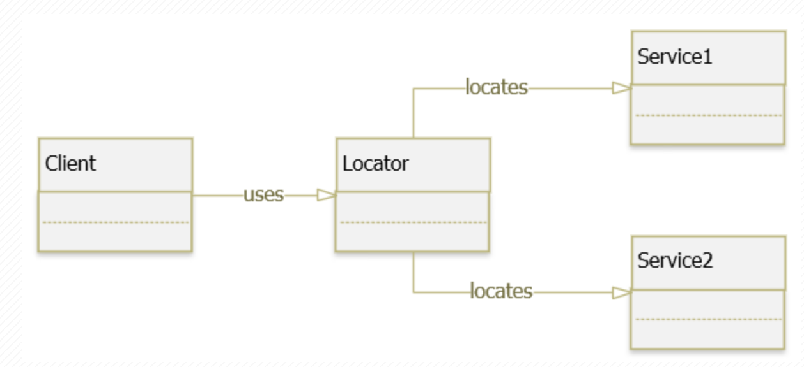
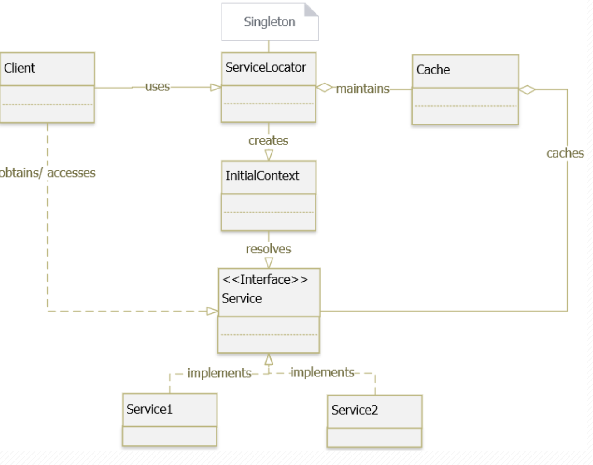

Service Locator Pattern
Mục lục
- Service Locator Pattern là gì ?
- Cài đặt Service Locator như thế nào ?
- Code
- Ưu điểm vs nhược điểm ?
- Use case điển hình.
Service Locator Pattern là gì ?
Service Locator là một pattern cho phép client có thể định vị những
service mà nó sử dụng. Bằng cách tách rời mối liên hết giữa class với
các dependencies (hay gọi là services) của nó thông qua việc chen vào giữa
mối liên kết một đối tượng trung gian là Service Locator

🚩 Thông thường thì Service Locator Pattern được kết hợp với Factory Pattern
hoặc Dependency Injection Pattern để có thể tạo ra các instance của service
Cài đặt Service Locator như thế nào?
Class Diagram

Với diagram như trên ta có thể hiểu flow để setup một Service Locator như sau:
- Client thực hiện nghiệp vụ và gọi vào
ServiceLocatorđể lấy service cần dùng (hay dependency cần dùng) ServiceLocatorcheck trongCachexem service đó đã có trongCachechưa ?- Nếu có thì trả về service cần dùng.
- Nếu không thì tiếp tục:
- Gọi vào
InitialContextđể khởi tạo service InitialContextthông quan interfaceServiceđể lấy instance củaServiceImpltheo các thông số- Trả về service instance cho
ServiceLocator - Và song song đó, cache lại service trong
Cache
- Gọi vào
🚩 Note : ServiceLocator luôn là Singleton , tránh racing condition.
CODE
Code on GitHub
Đầu tiên ta khởi tạo một interface Service và ServiceImpl.
Trong ServiceImpl, inject 2 thông số là serviceName và id
Interface Service.java
// Service.java
// [Interface]
public interface Service {
// the human-readable name of the service
String getName();
// UniqueID of the particular service
int getId();
// The workflow method that defines what this service does
void execute();
}
Class ServiceImpl.java
// ServiceImpl.java
// [Class]
import lombok.extern.slf4j.Slf4j;
@Slf4j
public class ServiceImpl implements Service{
private final String serviceName;
private final int id;
// Constructor
public ServiceImpl(String serviceName) {
this.serviceName = serviceName;
this.id = (int) Math.floor(Math.random() * 1000) + 1;
}
@Override
public String getName() {
return this.serviceName;
}
@Override
public int getId() {
return this.id;
}
@Override
public void execute() {
log.info("Service {} is now executing with id {}", getName(), getId());
}
public static void main(String[] args) {
ServiceImpl a = new ServiceImpl("test");
a.execute();
}
}
Khởi tạo class InitContext.java
// InitContext.java
// Class
import lombok.extern.slf4j.Slf4j;
@Slf4j
public class InitContext {
/**
* Perform the lookup based on the service name.
* The return object will need to be cast into a {@link Service}
*
* @param serviceName: a name
* @return : an {@link Service}
*/
public ServiceImpl lookup(String serviceName) {
if ("serviceA".equals(serviceName)) {
log.info("Looking up service A and creating new service for A");
return new ServiceImpl("serviceA");
} else if ("serviceB".equals(serviceName)) {
log.info("Looking up service B and creating new service for B");
return new ServiceImpl("serviceB");
} else {
return null;
}
}
}
ServiceCache.java
// ServiceCache.java
// Class
import lombok.extern.slf4j.Slf4j;
import lombok.var;
import java.util.HashMap;
import java.util.Map;
@Slf4j
public class ServiceCache {
private final Map<String, Service> serviceCache;
public ServiceCache() {
this.serviceCache = new HashMap<>();
}
/**
* Get the service from cache. null if no service is found matching the name
*
* @param serviceName: a string
* @return {@link Service}
*/
public Service getService(String serviceName) {
if (serviceCache.containsKey(serviceName)) {
var cacheService = serviceCache.get(serviceName);
var name = cacheService.getName();
var id = cacheService.getId();
log.info("(cache call) Fetched service {}({}) from cache ...!", name, id);
return cacheService;
} else {
return null;
}
}
/**
* Adds the service into the cache map.
*
* @param newService: a {@link Service}
*/
public void addService(Service newService) {
serviceCache.put(newService.getName(), newService);
}
}
Rồi bây giờ kết hợp service và cache lại để có ServiceLocator.java
// ServiceLocator.java
// Class
import lombok.var;
import java.util.Objects;
public class ServiceLocator {
private static final ServiceCache serviceCache = new ServiceCache();
private ServiceLocator(){}
/**
* Fetch the service with the name param from the cache first,
* if no service is found, lookup the service from the {@link InitContext}
* and then add the newly created service into the cache map
* for future request
*
* @param serviceName: astring
* @return {@link Service}
*/
public static Service getService(String serviceName) {
var serviceObj = serviceCache.getService(serviceName);
if (Objects.isNull(serviceObj)) {
/*
* If we are unable to retrieve anything from cache, then lookup the service
* and add it in the cache map
*/
var ctx = new InitContext();
serviceObj = ctx.lookup(serviceName);
if (Objects.nonNull(serviceObj)) { // Only cache a service if it actually exists
serviceCache.addService(serviceObj);
}
}
return serviceObj;
}
}
Thử nghiệm build một client để chạy thử App.java
// App.java
// CLass
import lombok.var;
public class App {
public static final String JNDI_SERVICE_A = "serviceA";
public static final String JNDI_SERVICE_B = "serviceB";
// Program entry point
public static void main(String[] args) {
var service = ServiceLocator.getService(JNDI_SERVICE_A);
service.execute();
service = ServiceLocator.getService(JNDI_SERVICE_B);
service.execute();
service = ServiceLocator.getService(JNDI_SERVICE_A);
service.execute();
service = ServiceLocator.getService(JNDI_SERVICE_A);
service.execute();
}
}
Run it !!!!!
🚩 Note : Rõ ràng ở đây tầng InitContext chưa được tối ưu, mỗi khi thêm một service X vào system,
code sẽ phải thay đổi để thêm dịch vụ. CHỗ này các bạn có thể tham khảo cách code Reflection để tối ưu hơn.
Ưu điểm vs nhược điểm ?
Ưu điểm:
- Quản lý tập trung các service thông qua
ServiceLocatorduy nhất (Singleton) - Ứng dụng chia ra các phần ít bị rằng buộc (loose coupling) với nhau. Dễ code, quản lý hơn.
- Tách rời class với các dependencies của nó, nhờ đó có thể thay thế các dependency tại thời điểm
run-timemà không cần phảire-compilehay phải restart ứng dụng - Dễ test hơn do các class không còn bị phụ thuộc vào dependencies
Nhược điểm:
- Khó debug hơn, vì các dependencies trở thành hidden đối với class
ServiceLocatorlà duy nhất => nghẽn cổ chai- Có thể sẽ gặp lỗi trên
run-timemà không gặp khicompile-timedo các service bị ẩn đi Service Locator Patternkhó maintain hơnDependency Injection Pattern. Do các concrete class vẫn có phụ thuộc vàoServiceLocator, trong khi đó DI chỉ dọi một lần đê inject các dependencies vào lớp chính.=> DI dễ viết Unit Test hơn.
Use Case
- Khi cần tách rời một class với các dependencies của nó.
- Khi cần quản lý tập trung việc khởi tạo các
Service
Lời kết
Service Locator là một cách thực hiện IoC Container.
Khi đọc Spring ta sẽ gặp rất nhiều khái niệm Dependency Inverrsion trong SOLID, IoC Container, DI container ……
Các b ài viết sắp tới sẽ viết về các thuật ngữ này.